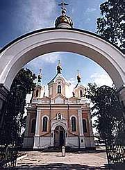

100–40 тысяч лет до н. э. — появление первых людей на территории Беларуси. До IX века на ней жили славянские союзы
дреговичей, кривичей и радимичей. Первые государственные образования —
Полоцкое, Туровское и Смоленское княжества. Город Полоцк известен с 862 года. XI век — расцвет Полоцкого княжества
при князе Всеславе Чародее.

Конец X века — распространение на Беларуси христианства, которое содействовало развитию культуры, появлению
каменного монументального зодчества, живописи, литературы. В начале XI века в Полоцке построен Софийский собор —
первое монументальное сооружение на землях Беларуси. Мастер–ювелир Лазарь Богша создал для просветительницы
Евфросинии Полоцкой уникальный крест — шедевр восточнославянского прикладного искусства. Среди христианских
писателей–проповедников наиболее известен Кирилл Туровский. 1–ая половина XIII века — начинает складываться
белорусский язык.

Начало XIII века — белорусские земли вошли в состав Великого княжества Литовского. Столицей нового государства стал
город Вильно (современный Вильнюс). Официальным языком с середины XIV и до конца XVII века был старобелорусский
язык. Конец XIV — начало XV века — период наибольшего могущества Великого княжества Литовского (время правления
князя Витовта).

Середина XVI века — объединение Великого княжества Литовского и Польского королевства (Люблинская уния). Образовано
новое федеративное государство — Речь Посполитая. Активно проводятся аграрные реформы, интенсивно развиваются
города, городские ремёсла, торговля. Под влиянием Реформации существует религиозная толерантность.
Конец XVI века — православная церковь Великого княжества Литовского признаёт верховенство Папы Римского (Брестская
церковная уния). Это встречает сопротивление в православной среде и вместе с последствиями трудного экономического
положения приводит к антифеодальной войне.
Середина XVII века — война с Россией, результатом которой явился тяжёлый экономический и демографический кризис
(население Беларуси уменьшилось вдвое).

Начало XVIII века — война со Швецией, вызвавшая очередной экономический кризис. 2–ая половина XVIII века — затяжной
политический кризис, анархия в стране. Происходят три раздела Речи Посполитой, вследствие которых восточная,
центральная, а затем западная части Беларуси вошли в состав Российской империи.
Речь Посполитая как государство перестала существовать. В Беларуси было проведено территориально–административное
деление по российскому образцу.
Середина XIX века — отмена крепостного права, рост национально— освободительного движения против царизма.
Конец XIX — начало XX века — новый подъём демократического и национально–освободительного движения, появление
революционных организаций.